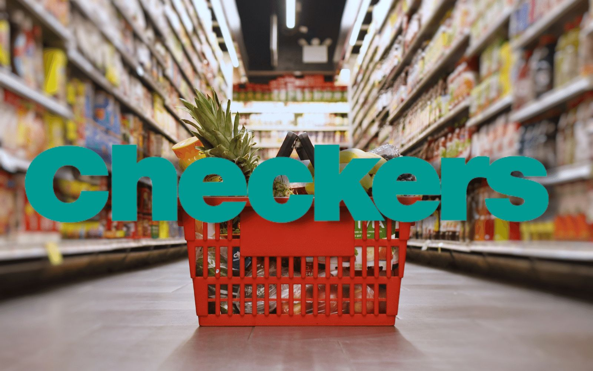
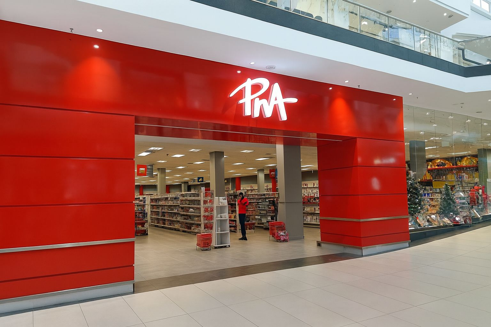
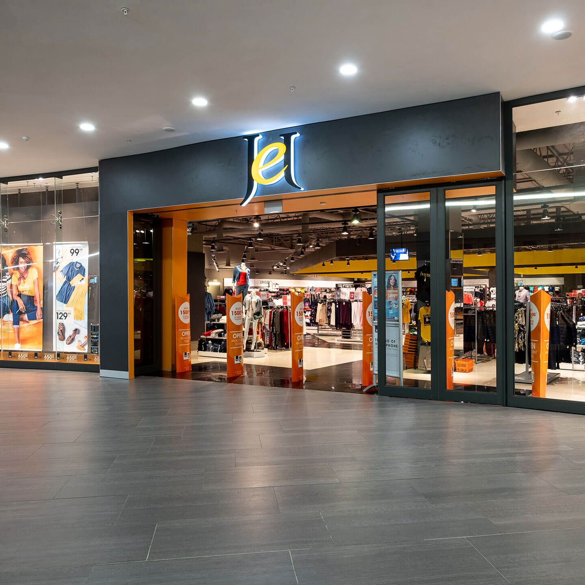

THE DONOR LIAISON (DONORS AND SPONSORS)FAQ
Golden Heart Donation Organisation wasn't named overnight,it reflects kindness as a treasure.Gold stands for earthly treasure,the heart for life treasure,so together they mean kindness is priceless to those receiving donations.Without you,there's no us and more donations save more lives.OUR GOAL is to build trust and explain by our actions how contribution works
If you want to know more about us CLICKAbout Us
Donor FAQ
- How the money is used?-We use 85% to buy bulk food,sanitary goods,clothing and the rest of the 15% covers logistics and packing
- Can I donate items?-YES,you are more than welcome to donate any item within our donation criteria
- Is my donation tax deductable?-YES we issue a tax certificate for your record once you contact our finance team
- Can I choose specific person I want to fund/donate for?-NO,To ensure fairness,we pool donations to cover those with urgent needs.However we provide "impact stories"in our monthly news letter so you can see real stories.
- Can my company become an official sponsor?-YES,we encourage businesses to collaborate.You can fill the sponsor application form to get started.
- What can I as a sponsor benefit?-Brand visibility,Networking opportunities,Tax benefit,Good reputation for contributing for good cause,Marketing opportunities,
DONATE NOW!
Find Us
Sol Plaatje University, Kimberley
Our Sponsors
CHECKERS Grocery Store

PNA Stationary Store

JET Clothing Store
